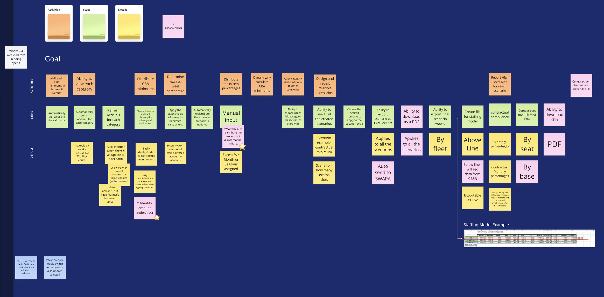

Designing Vacation Allocation for Southwest Planners
Replacing a multi-tab macro spreadsheet with a compliance-aware
planning tool that lets schedulers model scenarios, catch contract
violations in real time, and adapt when the contract changes.
CompanySouthwest Airlines (via Amdocs Studios)
Timeline2022–Present
RolePrincipal Designer
FocusEnterprise Tools, Data-Dense Interfaces, Compliance Design, Design Systems
The Problem
Southwest planners are responsible for one of the most consequential
decisions in the vacation bidding process — determining how many
slots are available each week of the year, across every base, for
every pilot role, before a single bid is submitted. Get it wrong and
11,000 pilots bid against inaccurate data. Miss a contract minimum
and the airline risks a grievance.
They were doing this in a multi-tab Excel spreadsheet with macros.
The tool planners used before — a multi-tab spreadsheet with
macros and a manual CSV export to feed the bidding system. One
wrong formula, one missed update, and compliance breaks for the
entire bid cycle.
The spreadsheet tracked weekly and monthly slot allocations across
every Southwest base, calculated percentage totals against annual
accruals, flagged seasonal contract minimums, and produced a CSV
that had to be manually exported and uploaded into a separate system
before bidding could open. A backup copy lived permanently in the
tab bar — because losing the file wasn't hypothetical.
This wasn't just a UX problem. It was a systemic risk hiding in plain sight.
Where the Complexity Lives
Rather than accepting the problem as defined, I started by mapping the real constraints — some inherited, some negotiable.
A small, expert user base
Planners aren't typical users. They know the SWAPA contract in detail. The tool had to meet their mental model, not simplify it away — which meant resisting the instinct to abstract complexity that experts need to see.
Layered contract requirements
The SWAPA contract defines weekly minimums, monthly minimums, and seasonal minimums — separately for Captains and First Officers, across every base. Any tool that couldn't surface all of it simultaneously would just replicate the spreadsheet's core failure.
Contract change as a design requirement
Minimum percentages aren't permanent. I identified early that designing for the current contract values would create future engineering debt every time the contract was renegotiated. Making minimums editable by planners wasn't a feature request — it was a strategic decision I brought to the team.
Jetstream design system
Working within Southwest's established design system meant no custom components. The challenge was achieving the data density and compliance intelligence this tool required using existing patterns — and identifying where the system needed to grow to support operational use cases it wasn't built for.
Discovery
With a small team of domain experts as our users, I made a
deliberate call to run collaborative working sessions rather than
traditional usability research. Planners weren't going to reveal
their mental models by completing tasks in a prototype — they needed
to map their own workflow to surface where the real friction lived.

User story mapping session with the planning team. Facilitated
collaborative discovery sessions to map the allocation workflow
end to end — surfacing the scenario modeling planners were already
doing mentally, but had no tool support for.
What the sessions revealed changed the design direction. Planners
weren't just entering numbers — they were running scenarios in their
heads. What happens if we boost December slots at DEN? Does that
break a seasonal minimum somewhere else? The spreadsheet forced them
to recalculate manually across multiple tabs every time they changed
an assumption. The real problem wasn't data entry. It was decision
support.
That insight reframed the entire project.
The Design Challenge
The core question became: how do you turn a compliance calculation
into a strategic planning tool — without adding cognitive load for
users who are already carrying the full weight of the contract in
their heads?
The answer was to make the tool's intelligence invisible until it's
needed. Compliance feedback surfaces in context, at the moment of
entry, with specific explanations — not as a separate validation
step planners have to seek out. Scenario modeling is structured but
lightweight — named, saveable, comparable — without requiring
planners to learn a new mental model.
The goal was a tool that thinks alongside planners, not one that
gets in their way.
The Solution
The redesign is built around three capabilities that work as a
system.
Scenario modeling. The Scenarios view: four named
strategies, compliance status at a glance, and clear indication of
which scenario is active. Summer-Heavy shows Errors — a compliance
violation that must be resolved before it can go live. The tool
makes that visible before it becomes a problem.
Real-time compliance feedback. January allocations
for ATL Captains and First Officers. Week 3 for First Officers is
flagged inline: "Weekly minimum must be ≥ 1.5%." The monthly total
also fails its threshold. The right panel shows accrual week
distribution and seasonal minimums simultaneously — required versus
actual, with deltas — so planners see the full compliance picture
without switching views.
Seasonal minimums at a glance. Seasonal Monthly
Minimums expanded: period, minimum percentage, required weeks,
actual weeks, and difference. Planners can see at a glance where
they stand across the full year — and where they have room to make
strategic adjustments.
Editable contract minimums. Settings & Defaults:
Contractual Minimums tab. Weekly, monthly flat, and seasonal monthly
minimums are all independently editable. This was a deliberate
architectural decision — not a feature request — to ensure the
tool's longevity across contract negotiations.
Scenario modeling
Planners create named scenarios — Baseline, Holiday Buffer,
Summer-Heavy, DEN Winter Boost — each representing a different
allocation strategy. Scenarios are independently editable,
compliance-checked, and comparable. The active scenario feeds the
bidding system. The others stay available without being lost.
Real-time compliance feedback
Every allocation decision is validated against the SWAPA contract
as planners work — weekly minimums, monthly minimums, and seasonal
minimums — with inline error messages that explain exactly what's
failing and what the requirement is. Planners don't hunt for
problems. The tool surfaces them in context, at the moment they're
created.
Editable contract minimums
When the SWAPA contract changes, planners update the tool
themselves. No engineering involvement, no redesign cycle. Default
minimums and seasonal exceptions are editable directly from the
Settings page — keeping the tool accurate across contract cycles and
giving the operational team ownership over their own system.
System Impact
The planner tool and the pilot-facing vacation bidding redesign are
two sides of the same system. Planners set the slot availability
that pilots bid against. The confidence indicators pilots see —
High, Medium, Low odds on their bid groups — are only meaningful if
the underlying allocation data is accurate and contract-compliant.
Designing both ends of that system gave me visibility into how
decisions made in the planner tool ripple through to the pilot
experience — and shaped design choices on both sides. That kind of
end-to-end ownership is rare in enterprise design, and it's where
the most important decisions get made.
What This Work Unlocked
Collaborative discovery as a design method
When your users are domain experts and stakeholders simultaneously, traditional research creates friction. Facilitated working sessions produced better insights faster — and built the cross-functional alignment that made the rest of the project move quickly. This approach is now part of how the broader design team approaches stakeholder-heavy projects.
Compliance feedback as decision support
The inline error system wasn't just a UX improvement — it changed how planners work. Instead of building a complete scenario and then checking compliance, they now catch and correct issues in real time. The tool shifted their workflow from reactive to proactive.
Designing for the contract change cycle
The editable minimums feature eliminated a category of engineering requests that would have recurred every contract cycle. Giving operational teams ownership over their own configuration reduced organizational dependency and made the tool genuinely sustainable.
Operational tools deserve the same craft
The planners using this tool are making decisions that affect 11,000 pilots' vacation time — and by extension, their families. High stakes deserve high craft, even when the user base is small and the work is invisible to the outside world.